일반기계기사 (2016-05-08 기출문제)
1과목: 재료역학
1. 그림과 같이 균일분포 하중 w를 받는 보에서 굽힘 모멘트 선도는?
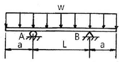
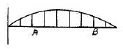
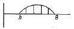
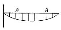
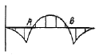
(정답률: 71%)

2. 일단 고정 타단 롤러 지지된 부정정보의 중앙에 집중하중 P를 받고 있을 때, 롤러 지지점의 반력은 얼마인가?
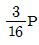
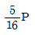
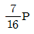
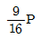
(정답률: 62%)
3. 지름이 d인 짧은 환봉의 축 중심으로부터 a만큼 떨어진 지점에 편심압축하중이 P가 작용할 때 단면상에서 인장응력이 일어나지 않는 a 범위는?
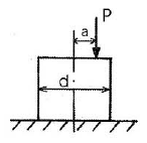
- d/8이내
- d/6이내
- d/4이내
- d/2이내
(정답률: 42%)
4. 바깥지름 30cm, 안지름 10cm인 중공 원형 단면의 단면계수는 약 몇 cm3인가?
- 2618
- 3927
- 6584
- 1309
(정답률: 67%)
5. 그림과 같이 하중을 받는 보에서 전단력의 최대값은 약 몇 kN인가?
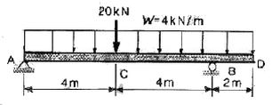
- 11 kN
- 25 kN
- 27 kN
- 35 kN
(정답률: 41%)
6. 그림과 같은 일단 고정 타단 롤러로 지지된 등분포하중을 받는 부정정보의 B단에서 반력은 얼마인가?
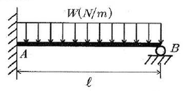
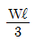
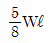
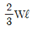
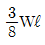
(정답률: 67%)
7. 그림과 같이 단붙이 원형축(Stepped Circular Shaft)의 풀리에 토크가 작용하여 평형상태에 있다. 이 축에 발생하는 최대 전단응력은 몇 MPa인가?
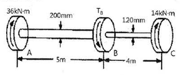
- 18.2
- 22.9
- 41.3
- 147.4
(정답률: 42%)
8. 그림과 구조물이 수직하중 2P를 받을 때 구조물 속에 저장되는 탄성변형에너지는? (단, 단면적 A, 탄성계수 E는 모두 같다.)
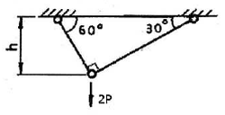
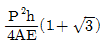
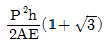
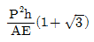
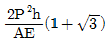
(정답률: 34%)
9. 지름이 동일한 봉에 위 그림과 같이 하중이 작용할 때 단면에 발생하는 축 하중 선도는 아래 그림과 같다. 단면 C에 작용하는 하중(F)는 얼마인가?
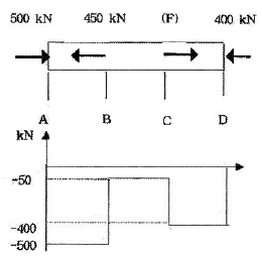
- 150
- 250
- 350
- 450
(정답률: 62%)
10. 강재의 인장시험 후 얻어진 응력-변형률 선도로부터 구할 수 없는 것은?
- 안전계수
- 탄성계수
- 인장강도
- 비례한도
(정답률: 60%)
11. 두께 1.0mm의 강판에 한 변의 길이가 25mm인 정사각형 구멍을 펀칭하려고 한다. 이 강판의 전단 파괴응력이 250MPa 일 때 필요한 압축력은 몇 kN 인가?
- 6.25
- 12.5
- 25.0
- 156.2
(정답률: 42%)
12. 정육면체 형상의 짧은 기둥에 그림과 같이 측면에 홈이 파여져 있다. 도심에 작용하는 하중 P로 인하여 단면 m-n 에 발생하는 최대 압축응력은 홈이 없을 때 압축응력의 몇 배 인가?
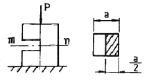
- 2
- 4
- 8
- 12
(정답률: 32%)
13. 길이가 L이고 지름이 d0인 원통형의 나사를 끼워 넣을 때 나사의 단위 길이 t0의 토크가 필요하다. 나사 재질의 전단탄성계수가 G일 때 나사 끝단 비틀림 회전량(rad)은 얼마인가?(오류 신고가 접수된 문제입니다. 반드시 정답과 해설을 확인하시기 바랍니다.)
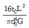
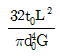
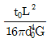
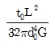
(정답률: 21%)
14. 그림과 같이 순수 전단을 받는 요소에서 발생하는 전단응력 τ=70MPa, 재료의 세로탄성계수는 200GPa, 포아송의 비는 0.25일 때 전단 변형률은 약 몇 rad 인가?
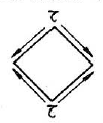
- 8.75×10-4
- 8.75×10-3
- 4.38×10-4
- 4.38×10-3
(정답률: 56%)
15. 그림과 같은 단순 지지보의 중앙에 집중하중 P가 작용할 때 단면이 (가)일 경우의 처짐 y1은 단면이 (나)일 경우의 처임 y2의 몇 배인가? (단, 보의 전체 길이 및 보의 굽힘 강성은 일정하며 자중은 무시한다.)
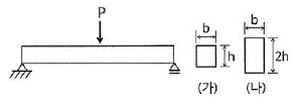
- 4
- 8
- 16
- 32
(정답률: 62%)
16. 지름 35cm의 차축이 0.2°만큼 비틀렸다. 이때 최대 전단응력이 49MPa이고, 재료의 전단탄성계수가 80GPa이라고 하면 이 차축의 길이는 약 몇 m 인가?
- 2.0
- 2.5
- 1.5
- 1.0
(정답률: 56%)
17. 그림과 같이 벽돌을 쌓아 올릴 때 최하단 벽돌의 안전계수를 20으로 하면 벽돌의 높이 h를 얼마만큼 높이 쌓을 수 있는가? (단, 벽돌의 비중량은 16kN/m3, 파괴 압축응력을 11MPa로 한다.)
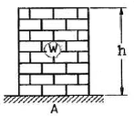
- 34.3m
- 25.5m
- 45.0m
- 23.8m
(정답률: 53%)
18. 평면 응력상태에서 σx와 σy 만이 작용하는 2축 응력에서 모어원의 반지름이 되는 것은? (단, σx>σy 이다.)
- (σx+σy)
- (σx-σy)
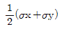
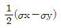
(정답률: 54%)
19. 전단력 10kN이 작용하는 지름 10cm인 원형단면의 보에서 그 중립축 위에 발생하는 최대 전단응력은 약 몇 MPa인가?
- 1.3
- 1.7
- 130
- 170
(정답률: 50%)
20. 지름 100mm의 양단 지지보의 중앙에 2kN의 집중하중이 작용할 때 보 속의 최대굽힘응력이 16MPa 일 경우 보의 길이는 약 몇 m 인가?
- 1.51
- 3.14
- 4.22
- 5.86
(정답률: 57%)
2과목: 기계열역학
21. 질량 1kg의 공기가 밀폐계에서 압력과 체적이 100kPd, 1m3 이었는데 폴리트로픽 과정(PVn=일정)을 거쳐 체적이 0.5m3이 되었다. 최종 온도 (T2)와 내부 에너지의 변화량(△U)은 각각 얼마인가? (단, 공기의 기체상수는 287 J/kgㆍK, 정적비열은 718 J/kgㆍK, 정압비열은 10⑤ J/kgㆍK, 폴리트로프 지수는 1.3이다.)
- T2=459.7 K, △U=111.3 kJ
- T2=459.7 K, △U=79.9 kJ
- T2=428.9 K, △U=80.5 kJ
- T2=428.9 K, △U=57.8 kJ
(정답률: 40%)
22. 카르노 열기관 사이클 A는 0℃와 100℃ 사이에서 작동되며 카르노 열기관 사이클 B는 100℃와 200℃ 사이에서 작동된다. 사이클 A의 효율(ηA)과 사이클 B의 효율(ηB)을 각각 구하면?
- ηA=26.80%, ηA=50.00%
- ηA=26.80%, ηA=21.14%
- ηA=38.75%, ηA=50.00%
- ηA=38.75%, ηA=21.14%
(정답률: 67%)
23. 대기압 100kPa에서 용기에 가득 채운 프로판을 일정한 온도에서 진공펌프를 사용하여 2kPa 까지 배기하였다. 용기 내에 남은 프로판의 중량은 처음 중량의 몇 % 정도 되는가?
- 20%
- 2%
- 50%
- 5%
(정답률: 59%)
24. 이상기체에서 엔탈피 h 와 내부에너지 u, 엔트로피 s 사이에 성립하는 식으로 옳은 것은? (단, T는 온도, v는 체적, P는 압력이다.)
- Tds=dh+vdP
- Tds=dh-vdP
- Tds=dh-Pdv
- Tds=dh+d(Pv)
(정답률: 54%)
25. 온도 T2인 저온체에서 열량 QA를 흡수해서 온도가 T1인 고온체로 열량 QR를 방출할 떄 냉동기의 성능계수(coefficient of performance)는?
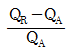
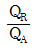
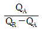
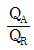
(정답률: 63%)
26. 비열비가 k인 이상기체로 이루어진 시스템이 정압과정으로 부피가 2배로 팽창할 때 시스템에 한 일이 W, 시스템에 전달된 열이 Q일 때, W/Q는 얼마인가? (단, 비열은 일정하다.)
- k
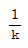
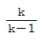
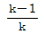
(정답률: 33%)
27. 냉동기 냉매의 일반적인 구비조건으로서 적합하지 않은 사항은?
- 임계 온도가 높고, 응고 온도가 낮을 것
- 증발열이 적고, 증기의 비체적이 클 것
- 증기 및 액체의 점성이 작을 것
- 부식성이 없고, 안정성이 있을 것
(정답률: 61%)
28. 공기 1kg을 정적과정으로 40℃에서 120℃까지 가열하고, 다음에 정압과정으로 120℃에서 220℃까지 가열한다면 전체 가열에 필요한 열량은 약 얼마인가? (단, 정압비열은 1.00kJ/kgㆍK, 정적비열은 0.71kJ/kgㆍK 이다.)
- 127.8kJ/kg
- 141.5kJ/kg
- 156.8kJ/kg
- 185.2kJ/kg
(정답률: 66%)
29. 열역학적 상태량은 일반적으로 강도성 상태량과 용량성 상태량으로 분류할 수 있다. 강도성 상태량에 속하지 않는 것은?
- 압력
- 온도
- 밀도
- 체적
(정답률: 65%)
30. 그림과 같이 중간에 격벽이 설치된 계에서 A에는 이상기체가 충만되어 있고, B는 진공이며, A와 B의 체적은 같다. A와 B사이의 격벽을 제거하면 A의 기체는 단열비가역 자유팽창을 하여 어느 시간 후에 평형에 도달하였다. 이 경우의 엔트로피 변화 △s는? (단, Cv는 정적비열, Cp는 정압비열, R은 기체상수이다.)
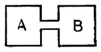
- △s=Cv×ln2
- △s=Cp×ln2
- △s=0
- △s=R×ln2
(정답률: 37%)
31. 수소(H2)를 이상기체로 생각하였을 때, 절대압력 1MPa, 온도 100℃에서의 비체적은 약 몇 m3/kg인가? (단, 일반기체상수는 8.3145 kJ/lmolㆍK 이다.)
- 0.781
- 1.26
- 1.55
- 3.46
(정답률: 63%)
32. 그림과 같은 Rankine 사이클의 열효율은 약 몇 % 인가? (단, h1=191.8 kJ/kg, h2=193.8 kJ/kg, h3=2799.5 kJ/kg, h4=2007.5 kJ/kg 이다.)
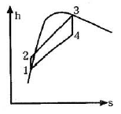
- 30.3%
- 39.7%
- 46.9%
- 54.1%
(정답률: 63%)
33. 20℃의 공기 5kg이 정압 과정을 거쳐 체적이 2배가 되었다. 공급한 열량은 몇 약 kJ인가? (단, 정압비열은 1kJ/kgㆍK 이다.)
- 1465
- 2198
- 2931
- 4397
(정답률: 59%)
34. 밀도 1000kg/m3인 물이 단면적 0.01m2인 관속을 2m/s의 속도로 흐를 때, 질량유량은?
- 20 kg/s
- 2.0 kg/s
- 50 kg/s
- 5.0 kg/s
(정답률: 67%)
35. 온도가 150℃인 공기 3kg이 정압 냉각되어 엔트로피가 1.063kJ/K 만큼 감소되었다. 이때 방출된 열량은 약 몇 kJ 인가? (단, 공기의 정압비열은 1.01kJ/kgㆍK 이다.)
- 27
- 379
- 538
- 715
(정답률: 31%)
36. 밀폐계의 가역 정적변화에서 다음 중 옳은 것은? (단, U:내부에너지, Q:전달된 열, H:엔탈피, V:체적, W:일 이다.)
- dU=dQ
- dH=dQ
- dV=dQ
- dW=dQ
(정답률: 59%)
37. 과열증기를 냉각시켰더니 포화영역 안으로 들어와서 비체적이 0.2327m3/kg이 되었다. 이때의 포화액과 포화증기의 비체적이 각각 1.079×10-3 m3/kg, 0.5243m3/kg 이라면 건도는?
- 0.964
- 0.772
- 0.653
- 0.443
(정답률: 58%)
38. 오토 사이클의 압축비가 6인 경우 이론 열효율은 약 몇 % 인가? (단, 비열비 =1.4 이다.)
- 51
- 54
- 59
- 62
(정답률: 66%)
39. 30℃, 100kPa의 물을 800kPa까지 압축한다. 물의 비체적이 0.001m3/kg로 일정하다고 할 때, 단위 질량당 소요된 일(공업일)은?
- 167 J/kg
- 602 J/kg
- 700 J/kg
- 1400 J/kg
(정답률: 68%)
40. 냉동실에서의 흡수 열량이 5 냉동통(RT)인 냉동기의 성능계수(COP)가 2, 냉동기를 구동하는 가솔린 엔진의 열효율이 20%, 가솔린의 발열량이 43000 kJ/kg 일 경우, 냉동기 구동에 소요되는 가솔린의 소비율은 약 몇 kg/h 인가? (단, 1 냉동통(RT)은 약 3.86 kW 이다.)
- 1.28 kg/h
- 2.54 kg/h
- 4.04 kg/h
- 4.85 kg/h
(정답률: 34%)
3과목: 기계유체역학
41. 무차원수인 스트라홀 수(Strouhal number)와 가장 관계가 먼 항복은?
- 점도
- 속도
- 길이
- 진동흐름의 주파수
(정답률: 39%)
42. 수면의 높이 차이가 H인 두 저수지 사이에 지름 d, 길이 ℓ인 관로가 연결되어 있을 때 관로에서의 평균 유속(V)을 나타내는 식은? (단, f는 관마찰계수이고, g는 중력가속도이며, K1, K2는 관입구와 출구에서 부차적 손실계수이다.)
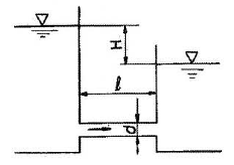
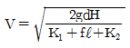
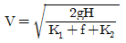
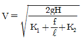
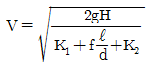
(정답률: 61%)
43. 다음 <보기> 중 무차원수를 모두 고른 것은?
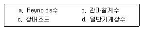
- a, c
- a, b
- a, b, c
- b, c, d
(정답률: 54%)
44. 정지된 액체 속에 잠겨있는 평면이 받는 압력에 의해 발생하는 합력에 대한 설명으로 옳은 것은?
- 크기가 액체의 비중량에 반비례한다.
- 크기는 도심에서의 압력에 면적을 곱한 것과 같다.
- 작용점은 평면의 도심과 일치한다.
- 수직평면의 경우 작용점이 도심보다 위쪽에 있다.
(정답률: 56%)
45. 평판으로부터의 거리를 y라고 할 때 평판에 평행한 방향의 속도 분포 (u(y))가 아래와 같은 식으로 주어지는 유동장이 있다. 여기에서 U와 L은 각각 유동장의 특성속도와 특성길이를 나타낸다. 유동장에서는 속도 u(y)만 있고, 유체는 점성계수가 μ인 뉴턴 유체일 때 y=L/8에서의 전단응력은?
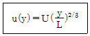
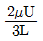
(정답률: 40%)
46. 다음 중 단위계(System of Unit)가 다른 것은?
- 항력(Drag)
- 응력(Stress)
- 압력(Pressure)
- 단위 면적 당 작용하는 힘
(정답률: 59%)
47. 지름비가 1:2:3 인 모세관의 상승높이 비는 얼마인가? (단, 다른 조건은 모두 동일하다고 가정한다.)
- 1:2:3
- 1:4:9
- 3:2:1
- 6:3:2
(정답률: 43%)
48. 다음 중 유량을 측정하기 위한 장치가 아닌 것은?
- 위어(weir)
- 오리피스(orifice)
- 피에조미터(piezo meter)
- 벤투리미터(venturi meter)
(정답률: 51%)
49. 국소 대기압이 710mmHg일 때, 절대압력 50kPa은 게이지 압력으로 약 얼마인가?
- 44.7 Pa 진공
- 44.7 Pa
- 44.7 kPa 진공
- 44.7 kPa
(정답률: 57%)
50. 지음은 200mm에서 지름 100mm로 단면적이 변하는 원형관 내의 유체 흐름이 있다. 단면적 변화에 따라 유체 밀도가 변경 전 밀도의 106%로 커졌다면, 단면적이 변한 후의 유체속도는 약 몇 m/s 인가? (단, 지름 200mm에서 유체의 밀도는 800kg/m3, 평균 속도는 20 m/s 이다.)
- 52
- 66
- 75
- 89
(정답률: 46%)
51. 지름이 0.01m 인 관 내로 점성계수 0.0⑤ Nㆍs/m2, 밀도 800kg/m3인 유체가 1m/s의 속도로 흐를 때 이 유동의 특성은?
- 층류 유동
- 난류 유동
- 천이 유동
- 위 조건으로는 알 수 없다.
(정답률: 65%)
52. 스프링 상수가 10N/cm 인 4개의 스프링으로 평판 A를 벽 B에 그림과 같이 장착하였다. 유량 0.01m3/s, 속도 10m/s인 물 제트가 평판 A의 중앙에 직각으로 충돌할 때, 평판과 벽 사이에서 줄어드는 거리는 약 몇 cm 인가?
- 2.5
- 1.25
- 10.0
- 5.0
(정답률: 49%)
53. 2차원 속도장이 로 주어질 때 (1,2) 위치에서의 가속도의 크기는 약 얼마인가?
- 4
- 6
- 8
- 10
(정답률: 19%)
54. 낙차가 100m이고 유량이 500m3/s 인 수력발전고에서 얻을 수 있는 최대 발전용량은?
- 50kW
- 50MW
- 490kW
- 490MW
(정답률: 49%)
55. 노즐을 통하여 풍량 Q=0.8m3/s 일 때 마노미터 수두 높이차 h는 약 몇 m 인가? (단, 공기의 밀도는 1.2kg/m3, 물의 밀도는 1000kg/m3이며, 노즐 유량계의 송출계수는 1로 가정한다.)
- 0.13
- 0.27
- 0.48
- 0.62
(정답률: 35%)
56. Blasius의 해석결과에 따라 평판 주위의 유동에 있어서 경계층 두께에 관한 설명으로 틀린 것은?
- 유체 속도가 빠를수록 경계층 두께는 작아진다.
- 밀도가 클수록 경계층 두께는 작아진다.
- 평판 길이가 길수록 평판 끝단부의 경계층 두께는 커진다.
- 점성이 클수록 경계층 두께는 작아진다.
(정답률: 57%)
57. 포텐셜 함수가 Kθ인 선와류 유동이 있다. 중심에서 반지름 1m인 원주를 따라 계산한 순환(circulation)은? (단, 이다.)
- 0
- K
- πK
- 2πK
(정답률: 37%)
58. 수면에 떠 있는 배의 저항문제에 있어서 모형과 원형 사이에 역학적 상사(相似)를 이루려면 다음 중 어느 것이 중요한 요소가 되는가?
- Reynolds number, Mach number
- Reynolds number, Froude number
- Weber number, Euler number
- Mach number, Weber number
(정답률: 68%)
59. 지름 D인 파이프 내에 점성 μ인 유체가 층류로 흐르고 있다. 파이프 길이가 L일 때, 유량과 압력 손실 △p의 관계로 옳은 것은?
(정답률: 64%)
60. 조종사가 2000m의 상공을 일정속도로 낙하산으로 강하하고 있다. 조종사의 무게가 1000N, 낙하산 지름이 7m, 항력계수가 1.3 일 때 낙하 속도는 약 몇 m/s 이다. (단, 공기 밀도는 1kg/m3 이다.)
- 5.0
- 6.3
- 7.5
- 8.2
(정답률: 59%)
4과목: 기계재료 및 유압기기
61. 대표적인 주조경질 합금으로 코발트를 주성분으로 한 Co-Cr-W-Cr계 합금은?
- 라우탈(lutal)
- 실루민(silumin)
- 세라믹(ceramic)
- 스텔라이트(stellite)
(정답률: 56%)
62. 두랄루민의 합금 조성으로 옳은 것은?
- Al-Cu-Zn-Pb
- Al-Cu-Mg-Mn
- Al-Zn-Si-Sn
- Al-Zn-Ni-Mn
(정답률: 71%)
63. 강의 열처리 방법 중 표면경화법에 해당하는 것은?
- 마퀜칭
- 오스포밍
- 침탄질화법
- 오스템퍼링
(정답률: 70%)
64. 고속도공구강(SKH2)의 표준조성에 해당되지 않는 것은?
- W
- V
- Al
- Cr
(정답률: 70%)
65. 다음 중 비중이 가장 큰 금속은?
- Fe
- Al
- Pb
- Cu
(정답률: 67%)
66. 서브제로(sub-Zero)처리 관한 설명으로 틀린 것은?
- 마모성 및 피로성이 향상된다.
- 잔류오스테나이트를 마텐자이트화 한다.
- 담금질을 한 강의 조직이 안정화 된다.
- 시효변화가 적으며 부품의 치수 및 형상이 안정된다.
(정답률: 44%)
67. 고 망간강에 관한 설명으로 틀린 것은?
- 오스테나이트 조직을 갖는다.
- 광석ㆍ암석의 파쇄기의 부품 등에 사용된다.
- 열처리에 수인법(water toughening)이 이용된다.
- 열전도성이 좋고 팽창계수가 작아 열변형을 일으키지 않는다.
(정답률: 49%)
68. 강의 5대 원소만을 나열한 것은?
- Fe, C, Ni, Si, Au
- Ag, C, Si, Co, O
- C, Si, Mn, P, S
- Ni, C, Si, Cu, S
(정답률: 68%)
69. C와 Si의 함량에 따른 주철의 조직을 나타낸 조직 분포도는?
- Gueiner, Klingenstein 조직도
- 마우러(Maurer) 조직도
- Fe-C 복평형 상태도
- Guilet 조직도
(정답률: 77%)
70. 과공석강의 탄소함유량(%)으로 옳은 것은?
- 약 0.01 ~ 0.02%
- 약 0.02 ~ 0.80%
- 약 0.80 ~ 2.0%
- 약 2.0 ~ 4.3%
(정답률: 66%)
71. 그림과 같이 P3의 압력은 실린더에 작용하는 부하의 크기 혹은 방향에 따라 달라질 수 있다. 그러나 중앙의 “A"에 특정 밸브를 연결하면 P3의 압력 변화에 대하여 밸브 내부에서 P2의 압력을 변화시켜 ⊿P를 항상 일정하게 유지시킬 수 있는데 "A"에 들어갈 수 있는 밸브는 무엇인가?
(정답률: 38%)
72. 유량제어 밸브를 실린더 출구 측에 설치한 회로로서 실린더에서 유출되는 유량을 제어하여 피스톤 속도를 제어하는 회로는?
- 미터 인 회로
- 카운터 밸런스 회로
- 미터 아웃 회로
- 블리드 오프 회로
(정답률: 74%)
73. 그림과 같은 방향 제어 밸브의 명칭으로 옳은 것은?
- 4 ports-4 control position valve
- 5 ports-4 control position valve
- 4 ports-2 control position valve
- 5 ports-2 control position valve
(정답률: 48%)
74. 다음 유압 작동유 중 난연성 작동유에 해당하지 않는 것은?
- 물-글리콜형 작동유
- 인산 에스테르형 작동유
- 수중 유형 유화유
- R&O형 작동유
(정답률: 51%)
75. 유입관호의 유량이 25L/min 일 때 내경이 10.9mm라면 관내 유속은 약 몇 m/s인가?
- 4.47
- 14.62
- 6.32
- 10.28
(정답률: 70%)
76. 일반적으로 저점도유를 사용하며 유압시스템의 온도도 60~80℃ 정도로 높은 상태에서 운전하여 유압시스템 구성기기의 이물질을 제거하는 작업은?
- 엠보싱
- 블랭킹
- 플러싱
- 커미싱
(정답률: 73%)
77. 실린더 안을 왕복 운동하면서, 유체의 압력과 힘의 주고 받음을 하기 위한 지름에 비하여 길이가 긴 기계 부품은?
- spool
- land
- port
- plunger
(정답률: 56%)
78. 한 쪽 방향으로 흐름은 자유로우나 역방향의 흐름을 허용하지 않는 밸브는?
- 셔틀 밸브
- 체크 밸브
- 스로틀 밸브
- 릴리프 밸브
(정답률: 72%)
79. 유압회로에서 감속회로를 구성할 때 사용되는 밸브로 가장 적합한 것은?
- 디셀러레이션 밸브
- 시퀀스 밸브
- 저압우선형 셔틀 밸브
- 파일럿 조작형 체크 밸브
(정답률: 62%)
80. 그림과 같은 유압 회로도에서 릴리프 밸브는?
- ⓐ
- ⓑ
- ⓒ
- ⓓ
(정답률: 74%)
5과목: 기계제작법 및 기계동력학
81. x 방향에 대한 운동 방정식이 다음과 같이 나타날 때 이 진동계에서의 감쇠 고유진동수(damped natural frequency)는 약 몇 rad/s 인가?
- 2.75
- 1.35
- 2.25
- 1.85
(정답률: 39%)
82. 감쇠비 ζ가 일정할 때 전달률을 1보다 작게 하려면 진동수비는 얼마의 크기를 가지고 있어야 하는가?
- 1보다 작아야 한다.
- 1보다 커야 한다.
- √2보다 작아야 한다.
- √2보다 커야 한다.
(정답률: 59%)
83. 그림과 같이 길이가 서로 같고 평행인 두 개의 부재에 매달려 운동하는 평판의 운동의 형태는?
- 병진운동
- 고정축에 대한 회전 운동
- 고정점에 대한 회전 운동
- 일반적인 평면운동(회전운동 및 병진운동이 아닌 평면 운동)
(정답률: 41%)
84. 질량 10kg인 상자가 정지한 상태에서 경사면을 따라 A지점에서 B지점까지 미끄러져 내려왔다. 이 상자의 B지점에서의 속도는 약 몇 m/s 인가? (단, 상자와 경사면 사이의 동마찰계수(μk)는 0.3이다.)
- 5.3
- 3.9
- 7.2
- 4.6
(정답률: 26%)
85. 질량이 100kg이고 반지름이 1m인 구의 중심에 420N의 힘이 그림과 같이 작용하여 수평면 위에서 미끄러짐 없이 구르고 있다. 바퀴의 각가속도는 몇 rad/s2 인가?(오류 신고가 접수된 문제입니다. 반드시 정답과 해설을 확인하시기 바랍니다.)
- 2.2
- 2.8
- 3
- 3.2
(정답률: 26%)
86. 주기운동의 변위 x(t)가 x(t)=Asin⍵t로 주어졌을 때 가속도의 최대값은 얼마인가?
- A
- ⍵A
- ⍵2A
- ⍵3A
(정답률: 64%)
87. 36km/h의 속력으로 달리던 자동차 A가 정지하고 있던 자동차 B 와 충돌하였다. 충돌 후 자동차 B는 2m 만큼 미끄러진 후 정지하였다. 두 자동차 사이의 반발계수 e는 약 얼마인가? (단, 자동차 A, B 의 질량은 동일하며 타이어와 노면의 동마찰계수는 0.8 이다.)
- 0.06
- 0.08
- 0.10
- 0.12
(정답률: 27%)
88. 기중기 줄에 200N과 160N의 일정한 힘이 작용하고 있다. 처음에 물체의 속도는 밑으로 2m/s였는데, 5초 후에 물체 속도의 크기는 약 몇 m/s 인가?
- 0.18m/s
- 0.28m/s
- 0.38m/s
- 0.48m/s
(정답률: 24%)
89. 스프링으로 지지되어 있는 질량의 정적 처짐이 0.5cm 일 때 이 진동계의 고유진동수는 몇 Hz인가?
- 3.53
- 7.⑤
- 14.09
- 21.15
(정답률: 50%)
90. 어떤 사람이 정지 상태에서 출발하여 직선 방향으로 등가속도 운동을 하여 5초 만에 10m/s의 속도가 되었다. 출발하여 5초 동안 이동한 거리는 몇 m 인가?
- 5
- 10
- 25
- 50
(정답률: 54%)
91. 다음 중 열처리(담금질)에서의 냉각능력이 가장 우수한 냉각제는?
- 비눗물
- 글리세린
- 18℃의 물
- 10% NaCl액
(정답률: 55%)
92. 경화된 작은 철구(鐵球)를 피가공물에 고압으로 분사하여 표면의 경도를 증가시켜 기계적 성질, 특히 피로강도를 향상시키는 가공법은?
- 버핑
- 버니싱
- 숏 피닝
- 슈퍼 피니싱
(정답률: 66%)
93. 허용동력이 3.6kW인 선반의 출력을 최대한으로 이용하기 위하여 취할 수 있는 허용최대 절삭면적은 몇 mm2인가? (단, 경제적 절삭속도는 120m/min을 사용하며, 피삭재의 비절삭 저항이 45kgf/mm2, 선반의 기계 효율이 0.80 이다.)
- 3.26
- 6.26
- 9.26
- 12.26
(정답률: 30%)
94. 용제와 와이어가 분리되어 공급되고 아크가 용제 속에서 발생되므로 불가시 아크 용접이라고 불리는 용접법은?
- 피복 아크 용접
- 탄산가스 아크 용접
- 가스텅스텐 아크 용접
- 서브머지드 아크 용접
(정답률: 61%)
95. 주조에서 주물의 중심부까지의 응고시간(t), 주물의 체적(V), 표면적(S)과의 관계로 옳은 것은? (단, K는 주형상수이다.)
(정답률: 44%)
96. CNC 공작기계의 이동량을 전기적인 신호로 표시하는 회전 피드백 장치는?
- 리졸버
- 볼 스크루
- 리밋 스위치
- 초음파 센서
(정답률: 49%)
97. 소성가공에 포함되지 않는 가공법은?
- 널링가공
- 보링가공
- 압출가공
- 전조가공
(정답률: 42%)
98. 절삭가공 시 절삭유(cutting fluid)의 역할로 틀린 것은?
- 공구와 칩의 친화력을 돕는다.
- 공구나 공작물의 냉각을 돕는다.
- 공작물의 표면조도 향상을 돕는다.
- 공작물과 공구의 마찰감소를 돕는다.
(정답률: 42%)
99. 판 두께 5mm인 연강 판에 직경 10mm의 구멍을 프레스로 블랭킹하려고 할 때, 총 소요동력 (Pt)은 약 몇 kW인가? (단, 프레스의 평균속도는 7m/min, 재료의 전단강도는 300N/mm2, 기계의 효율은 80% 이다.)
- 5.5
- 6.9
- 26.9
- 68.7
(정답률: 42%)
100. 래핑 다듬질에 대한 특징 중 틀린 것은?
- 내식성이 증가된다.
- 마멸성이 증가된다.
- 윤활성이 좋게 된다.
- 마찰계수가 적어진다.
(정답률: 55%)